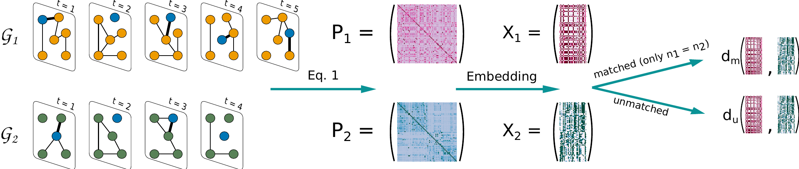

2. Details on the use of the GDynaDist algorithm#
2.1. Introduction#
Our package allows one to compute a distance between pairs of temporal graphs. The package relies on pandas to represent graphs as a sequence of temporal edge lists. We allow three formats to represent temporal edges:
\((i,j,t)\): this notation means that node \(i\) interacts with node \(j\) at time \(t\). Here, time is a discrete quantity, and each interaction lasts exactly one time unit.
\((i, j, t, \tau)\): this notation denotes an interaction between node \(i\) and node \(j\) starting at time \(t\) and lasting a duration \(\tau\). In this case, time can be continuous.
\((i, j, t, w)\): similarly to the first notation, time is discrete, and each edge has an additional weight.
In the Data folder, we shared some datasets to showcase the use of our distance, which we now describe in detail. First, we load the relevant packages and the temporal graphs in the form of temporal edge lists. We use here the primaryschool dataset collected by the SocioPatterns collaboration.
# laod packages
import pandas as pd
from copy import copy
import numpy as np
from GDynaDist import Graphs4Distance
2.2. Dealing with the input graphs#
2.2.1. Data formats#
We first look at a dataset in the ijt format. The column names must be i, j, and t and must represent nodes’ identities (columns i and j) and time (column t). The nodes’ identities can be integers, floats, or even strings. Time can be represented in two ways: i) as a number (in this case, it has to be an integer or a float); ii) in datetime format. We now provide an example of the same dataset with the two possible time formats.
# dataset with time in numbers
df_ijt = pd.read_csv('Data/primaryschool.csv')
# dataset with time in datetime format
df_ijt_datetime = pd.read_csv('Data/primaryschool_datetime.csv')
print(f'Time as numbers:\n {df_ijt.head()}')
print(f'.......\nTime as datetime:\n {df_ijt_datetime.head()}')
Time as numbers:
i j t
0 1558 1567 31220
1 1560 1570 31220
2 1567 1574 31220
3 1632 1818 31220
4 1632 1866 31220
.......
Time as datetime:
i j t
0 1558 1567 1970-01-01 08:40:20
1 1560 1570 1970-01-01 08:40:20
2 1567 1574 1970-01-01 08:40:20
3 1632 1818 1970-01-01 08:40:20
4 1632 1866 1970-01-01 08:40:20
2.2.2. Using the Graphs4Distance class#
To compute the distance between graph pairs, we must first initiate a class to which all the relevant parameters are fed. We describe here its use and its arguments. Note that all these inputs are optional.
Data = Graphs4Distance(verbose: int, dim: int, n_epochs: int, k: int, eta: float, seed : int)
verbose: this parameter sets the level of verbosity and can be (0, 1, 2). With verbose = 0, the progress will not be printed. With verbose = 1, only some messages will be printed, while verbose = 2 is the highest verbosity level.
dim: the distance between temporal graphs is computed in an embedded space, and this parameter sets its dimension. By default, we let d = 32.
n_epochs: number of training epochs to obtain the embeddings.
k: Order of the Gaussian approximation of EDRep.
eta: learning rate to obtain the embeddings.
seed: seed used for the random number generator
So, we initialize the class with its default values.
Data = Graphs4Distance()
2.2.3. Adding datasets to the Data class#
The idea of using the Data class is to have all the relevant pieces of information in a single place. The first step is thus to add all graphs to this class. In this tutorial, we will use the df_ijt and df_ijt_datetime graphs, which are equivalent. In the next notebook, we show how to use our distance in more general settings. To add a dataset to the Data class, we use the LoadDataset function. Let us have a look at the function parameters.
Data.LoadDataset(df, name)
Inputs
df: this is the pandas dataframe representing the graph as a set of temporal edge lists.
name: this is a unique identifier of the graph that we will use in our project to call the graph. It can be a string or a number.Optional inputs
taumin: our algorithm works with a discrete version of time. When using the \((i,j,t,\tau)\) representation, time can be continuous, and this parameter allows the user to discretize it. If it is not specified, the shortest \(\tau\) will be used.
t_agg: the two graphs can be compared at different time scales by aggregating the time. Specifically, this parameter sets the time aggregation considering all interactions happening within the temporal resolution as simultaneous. Note that it is different fromtaumin, which only sets the minimal duration of an interaction event in the case in which time is continuous. This parameter is crucial for decreasing the number of snapshots and speeding up the distance computation, while also changing the time scale under analysis.
format: when representing time in the datetime format, this parameter allows the user to specify how time is represented.
symmetric: this is a boolean variable that indicates whether the graph is directed (symmetric = False) or undirected (symmetric = True).
nodes: by default it is set toNoneand the set of nodes is inferred from the edge list. Otherwise, it is the list of nodes composing the temporal graph and it may also include nodes that do not appear in the edge list.
In our dataset, when using the format ijt, time is expressed in seconds, and it has a temporal resolution of \(20~s\). The most obvious choice of taumin is thus taumin = 20. If we want to aggregate time over \(10\) minutes, we must choose t_agg = 600, which is the number of seconds present in \(10\) minutes. When using the datetime format, time is expressed year-month-day hour:minute:second. We thus let format = '%Y-%m-%d %H:%M:%S' when using this representation.
Data.LoadDataset(df_ijt, 'ijt', t_agg = 600)
print('-----')
Data.LoadDataset(df_ijt_datetime, 'ijt_datetime', t_agg = 600, format = '%Y-%m-%d %H:%M:%S')
print('-----')
The graph has n = 242 nodes
The number of snapshot is T = 195.
To reduce the T and speed up the distance computation, consider to increase the parameter `t_agg`.
-----
The graph has n = 242 nodes
The number of snapshot is T = 195.
To reduce the T and speed up the distance computation, consider to increase the parameter `t_agg`.
-----
The Data class allows the user to access some usuful parameters and perform the main operations to compute the distance. The following commands give access to the various parameters used to compute the distance
Data.verbose # level of verbosity
Data.dim # embedding dimension
Data.n_epochs # number of training epochs to obtain the embedding
Data.k # approximation order used in the embedding algorithm
Data.eta # initial learning parameter in the embedding algorithm
Data.seed # seed used to compute the embedding
On top of these parameters, we can use
Data.graphs
to access all datasets that have been loaded. This is a dictionary whose keys are the names attributed to the different graphs. To access the graph named ijt, we write
Graph = Data.graphs['ijt']
This outputs a TGraph class that gives further useful pieces of information about the graph.
Graph.df # dataframe containing the temporal graph. Note, when computing the embedding, this may be deleted to save space
Graph.n = # number of nodes
Graph.NodeMapper = NodeMapper # this is a dictionary mapping the nodes' ids (as inferred from the input dataset) with integers between 0 and n-1, used to number the rows of the embedding and adjacency matrices
Graph.T = T # number of snapshots
Graph.t_agg = t_agg # aggregation parameter
Graph.taumin = taumin # minimal duration of a contact
Graph.X = X # embedding matrix. Note, to obtain this entry you must first compute the embedding using Data.GraphDynamicEmbedding(name) as detailed below
2.3. Computing the distance#
We recall the pipeline we use to compute the distance between temporal graphs

For each graph, we obtain the limiting distribution of time-respecting paths and we create an embedding using the EDRep algorithm. Once we are in the embedded space we can compute the distance. We distinguish between two types of distances matched and unmatched:
matched: in this case there is a known, bijective relation between the nodes of two graphs. This implies that the nodes are the same. Note that having graphs with the same size is a necessary but not sufficient condition to use this distance.unmatched: two graphs are unmatched if they are not matched, or, even if they are, if we do not want to use the known relationship between their nodes. This distance can be used for graphs with a different number of nodes.
The distance can be computed in two ways:
By directly calling the command
Data.GetDistance('graph_1', 'graph_2', distance_type)
Here
'graph_1'and'graph_2'are the identifier used for the graphs, whiledistance_typecan be'matched'or'unmatched'. This function will compute the embeddings of the two graphs and then the distance between the embeddings. If the embeddings have already been computed, they will not be computed again.By first computing the embedding explicitly and then computing the distance
Data.GraphDynamicEmbedding('graph_1') Data.GraphDynamicEmbeddin('graph_2') Data.GetDistance('graph_1', 'graph_2', distance_type)
This way, we explcitly first compute the embeddings and then the distance. The main advantage is that the function
GraphDynamicEmbeddinghas an additional input calledkeep_graphof boolean type. If it is set toFalse, then it will delete the dataframe containing the temporal graph after computing the embedding. This may be particularly convenient when computing the distance among a large number of graphs, as it allows to free a lot of memory space.
Let us comment two other relevant inputs
symmetric: this is a Boolean variable. If it is set toTrueit will force the temporal graph to be undirected, else it will interpret the edge list as directed.
node_mapping: this variable is necessary when using the matched distance and it provides the mapping between the nodes of the two graphs. It can have two expressions
same: this means that the nodes’ ids in the two graphs are identicalit can be a dictionary mapping the node labels of one graph into the other.
Data.GetDistance('ijt', 'ijt_datetime', distance_type = 'matched', node_mapping = 'Same')
Computing the embeddings of ijt
Running the optimization for k = 1
Deleting ijt=============>] 100%
Computing the embeddings of ijt_datetime
Running the optimization for k = 1
Deleting ijt_datetime====>] 100%
0.0
Alternatively, we can specify a node mapping by using a dictionary. Here we use a “wrong” node mapping, i.e. a random mapping between nodes that gives a non-zero distance.
# get the nodes in the first graph
nodes1 = list(Data.graphs['ijt'].NodeMapper.keys())
# get the nodes in the second graph and shuffle their labels
nodes2 = list(Data.graphs['ijt_datetime'].NodeMapper.keys())
np.random.shuffle(nodes2) # if we comment this line, the distance is zero
# create the mapping
Mapping = dict(zip(nodes1, nodes2))
# compute the distance
Data.GetDistance('ijt', 'ijt_datetime', distance_type = 'matched', node_mapping = Mapping)
127.21612942391766
2.4. Using other file formats#
We now test the other two formats that are accepted as valid inputs. Note that also in this case, time can be represented also in date-time format.
2.4.1. ijttau#
We load the file ijttau in which the edges are represented in the format \((i,j,t,\tau)\). Given that time is discrete in the original dataset, the two representations are equivalent if we use taumin = 20. If we change the value of taumin, instead, the two graphs will be different and the distance will be non-zero.
df_ijttau = pd.read_csv('Data/ijttau.csv')
print(df_ijttau)
i j t tau
0 1426 1427 36740 20.0
1 1426 1427 36940 40.0
2 1426 1427 39640 40.0
3 1426 1427 52820 40.0
4 1426 1427 54760 20.0
... ... ... ... ...
77516 1919 1922 124500 20.0
77517 1919 1922 124680 20.0
77518 1919 1922 125860 20.0
77519 1919 1922 144280 20.0
77520 1920 1922 130200 20.0
[77521 rows x 4 columns]
# add the graph with taumin = 20
Data.LoadDataset(df_ijttau, 'ijttau_20', taumin = 20, t_agg = 600)
print(f'Distance for taumin = 20: {Data.GetDistance('ijt', 'ijttau_20', distance_type = 'matched', node_mapping = 'Same')}')
print('\n##################################\n')
# add the graph with taumin = 60
Data.LoadDataset(df_ijttau, 'ijttau_60', taumin = 60, t_agg = 600)
print(f'Distance for taumin = 60: {Data.GetDistance('ijt', 'ijttau_60', distance_type = 'matched', node_mapping = 'Same')}')
taumin = 20.0
The graph has n = 242 nodes
The number of snapshot is T = 195.
To reduce the T and speed up the distance computation, consider to increase the parameter `t_agg`.
Computing the embeddings of ijttau_20
Running the optimization for k = 1
Deleting ijttau_20=======>] 100%
Distance for taumin = 20: 0.0
##################################
Warning: note that the selected value of `taumin` is smaller than the observed one.
All interactions with a duration smaller than `taumin` will be increased by default.
taumin = 60
The graph has n = 242 nodes
The number of snapshot is T = 195.
To reduce the T and speed up the distance computation, consider to increase the parameter `t_agg`.
Computing the embeddings of ijttau_60
Running the optimization for k = 1
Deleting ijttau_60=======>] 100%
Distance for taumin = 60: 9.922817866505348
2.4.2. ijtw format#
This format allows to associate a weight to each edge. To test this format, we let the weight of an edge be the cumulative interaction time spent between two nodes in the time-span of \(10\) minutes. By comparing this graph with the original one aggregated at \(10\) minutes, the distance should be zero, while it is non-zero for different aggregation values.
# create the graph ijtw
df_ijtw = copy(df_ijt)
df_ijtw['w'] = 1
df_ijtw.t -= df_ijtw.t.min()
df_ijtw.t = (df_ijtw.t/600).astype(int)
df_ijtw = df_ijtw.groupby(['i', 'j', 't']).sum().reset_index()
print(df_ijtw)
i j t w
0 1426 1427 9 3
1 1426 1427 14 2
2 1426 1427 36 2
3 1426 1427 39 1
4 1426 1427 42 2
... ... ... ... ..
44857 1919 1922 152 1
44858 1919 1922 155 2
44859 1919 1922 157 1
44860 1919 1922 188 1
44861 1920 1922 164 1
[44862 rows x 4 columns]
Data.LoadDataset(df_ijtw, 'ijtw', t_agg = 1)
print(f'Distance with the graph aggregated over 10 minutes windows: {Data.GetDistance('ijt', 'ijtw', distance_type = 'matched', node_mapping = 'Same')}')
print('\n###################################\n')
# repeat by comparing with `ijt` aggregated over 20 minutes
Data.LoadDataset(df_ijtw, 'ijt_20', t_agg = 1200)
print(f'Distance with the graph aggregated over 20 minutes windows: {Data.GetDistance('ijt_20', 'ijtw', distance_type = 'matched', node_mapping = 'Same')}')
The graph has n = 242 nodes
The number of snapshot is T = 195.
To reduce the T and speed up the distance computation, consider to increase the parameter `t_agg`.
Computing the embeddings of ijtw
Running the optimization for k = 1
Deleting ijtw============>] 100%
Distance with the graph aggregated over 10 minutes windows: 0.0
###################################
The graph has n = 242 nodes
The number of snapshot is T = 1.
To reduce the T and speed up the distance computation, consider to increase the parameter `t_agg`.
Computing the embeddings of ijt_20
Running the optimization for k = 1
Deleting ijt_20==========>] 100%
Distance with the graph aggregated over 20 minutes windows: 50.24524738717302
2.5. Conclusion#
This concludes the description of the basic use of our package. For more involved experiments, follow the next tutorial.